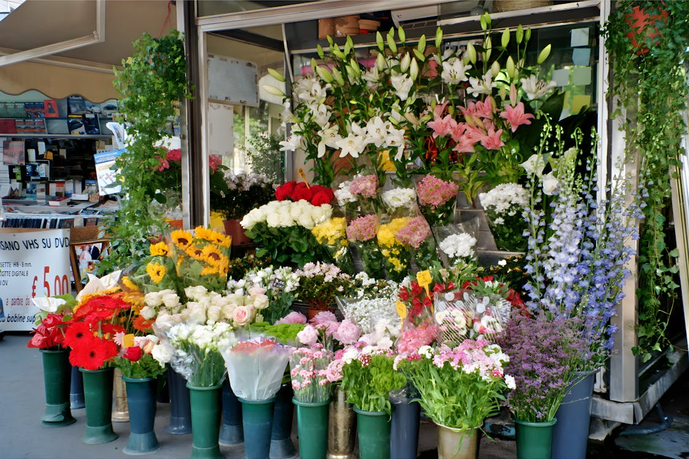

FLORIS IS NOT JUST A FLOWER SHOP IT IS A CREATIVE WORKSHOP WHERE EVERY LEAF AND PETAL MATTERS. WE STARTED OUR JOURNEY IN 2015 AS A SMALL FAMILY SHOP AND TODAY WE ARE A TEAM OF 10 TALENTED FLORISTS.
WE WORK DIRECTLY WITH PROVEN PLANTATIONS IN HOLLAND, ECUADOR AND KENYA, SO WE GUARANTEE THE FRESHNESS OF EACH BOUQUET. OUR MISSION IS TO GIVE JOY AND AESTHETIC PLEASURE THROUGH THE LANGUAGE OF FLOWERS.